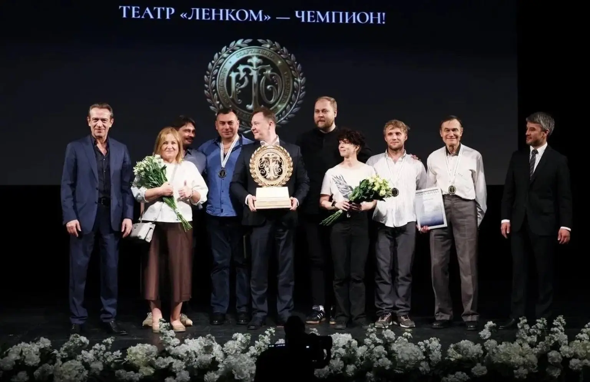
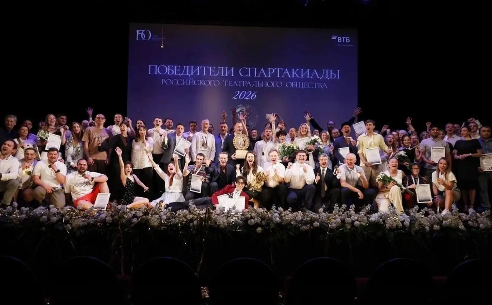

Сувениры, призы, награды
Переходящий кубок Спартакиады РТО
Переходящий кубок Спартакиады Российского театрального общества.
Разработка и производство — Step3D. Из портфолио STEP_3D.
Изготовление
Step3D разработал и изготовил награду: 3D-моделирование, печать, сборка и декоративная отделка.
Первый обладатель
Театр «Ленком Марка Захарова», победитель общекомандного зачёта Спартакиады РТО 2026 года.
Материалы проекта
3 фото · 0 видео. Видео запускается только вручную.


